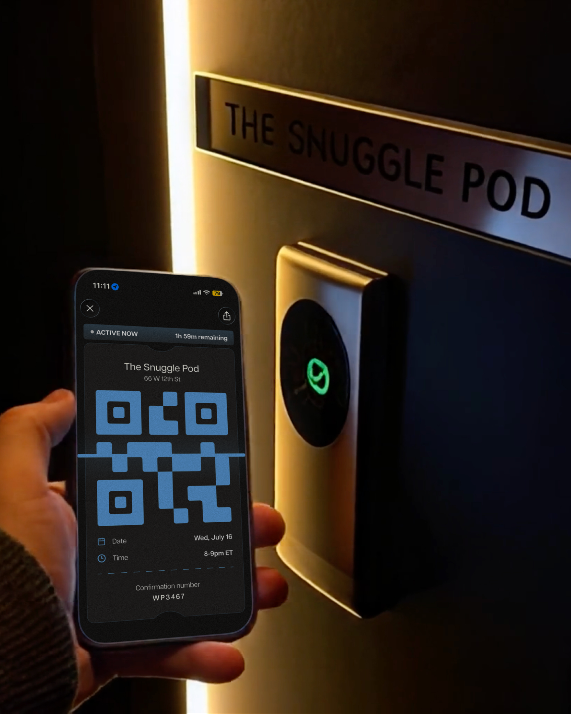
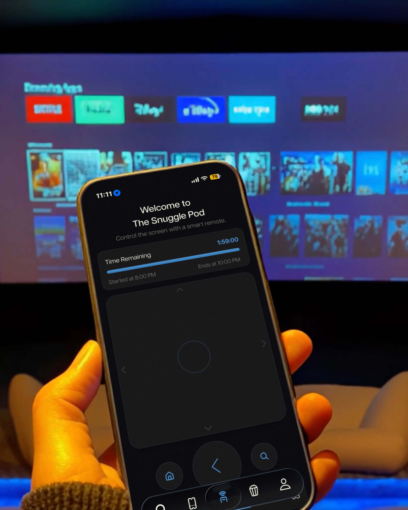
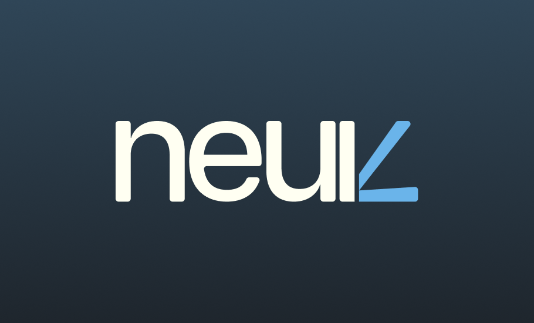

neuk · Product Design · 2026
Turning Streaming Into a Shared Experience
A platform for booking private watch rooms that packages the full coordination overhead of shared viewing — scheduling, ticketing, QR room access, and in-session control — into a single workflow.
Overview
Watching together is socially valuable. Coordinating it isn't.
neuk reframes shared viewing as a systems problem — not a content problem. The gap isn't what to watch. It's having the right environment and a way to get there without the planning falling apart.
The coordination system
Three structural forces breaking shared media rituals
Streaming fragmentation
Content is split across multiple services — deciding what to watch requires cross-platform negotiation before the event starts.
Coordination starts before anyone opens the app.
Urban living constraints
Most city apartments can't comfortably host the group viewing experience people actually want. Theaters are inflexible; bars optimize for noise.
There's no middle option between home and theater.
Group chat as logistics tool
Scheduling, cost-splitting, and confirming attendance across a group chat creates enough friction to cancel plans that would have happened with less overhead.
The coordination kills the plan.
The highest-value design move was redefining the problem from "book a room" to "reduce the coordination cost of gathering."
Solution
A bookable layer that turns group intent into a confirmed shared experience.
Three interdependent layers — user, venue, session — work as one connected system.
Three interdependent layers
User layer
Discover, plan, commit. Search by location, date, capacity, and AV setup. Group invite and ticketing happen inside the same flow.
Venue layer
Physical rooms as product surfaces. Room attributes, availability, seating types, and AV capabilities surface as first-class filters — not fine print.
Session layer
Phone as room interface. QR check-in activates the room remote. Playback, volume, lighting, and ordering all flow through the same app.
Core Flows
Four moments that turn a messy social plan into a confirmed session.
Discovery, commitment, room activation, and continuity — the minimum proof of a full service loop.
Discover: find the right room for the group
Users filter by date, group size, AV quality, and price. Room attributes that materially affect the group decision — screen size, seating type, streaming support — surface as first-class product features, not specs buried in a listing.
Book: turn intent into a committed plan
The booking flow moves from room detail to payment with a clear cost breakdown, then issues a QR ticket that serves as both proof of purchase and the operational key for room entry.

Enter: phone becomes the room
Scanning the on-screen QR code pairs the phone to the room and activates the remote — playback, volume, lighting, and ordering through the same app. The product doesn't end at the door; it extends into the session itself.

Return: build the repeat ritual
Post-session screens structure booking history across active, upcoming, and past states. Favorites and saved preferences make subsequent bookings faster — the product's long-term value is repeated social rituals, not one-off events.
System
neuk is a coordination layer, not a booking screen.
Designing any layer in isolation breaks the others. The system works only when user, venue, and session layers are connected end to end.

Reduce discovery friction
Surface room attributes that materially affect group decisions. Show availability inline so evaluation reduces planning back-and-forth.
Collapse the commitment step
Move from browsing to confirmed session in one flow. Payment, ticketing, and group logistics packaged together — no handoff to a separate tool.
Extend the product into the room
QR pairing turns the phone into the room operating layer. Booking data, room state, and in-session actions are connected — not siloed.
Support the return loop
Booking history, favorites, and saved preferences lower the friction of the next visit — the product's long-term value is repeated rituals, not first bookings.
The value comes from continuity. neuk does not add a tool for each step — it connects steps that were previously handled by group chat, multiple apps, and in-person negotiation.
Research
People aren't asking for bigger screens. They're asking for a middle ground.
Interviews consistently surfaced the same gap: not the right content, but the right environment — with less overhead than hosting and more intimacy than a theater.
Environment over content
The unmet need is a middle ground between home intimacy and theater quality — without the friction of hosting.
Coordination as cancellation
Group chats are a poor operating system for planning. Scheduling and logistics create enough friction to cancel plans that would otherwise happen.
Ritual, not novelty
Shared viewing is already a ritual for sports, premieres, and weekly drops — the product needs to support repetition, not novelty.
Category gap
Theaters are inflexible, bars are loud, and venue booking tools aren't designed for media rituals. The category didn't exist yet.
Design Decisions
Three decisions that made the concept operational.
Each decision came from a specific research signal. None of them were obvious at the start.
Physical gathering, not remote viewing
Research showed the real gap was environment — not access to content. Prototyping a remote watch-party feature early revealed it was the weaker path. The MVP had to center bookable private rooms.
What we cut
Remote watch-party layer — adds another fragmented tool without solving the physical space or coordination problems.
What we kept
Bookable private rooms — addresses both the environment gap and the coordination overhead in one product surface.
Coordination workflow, not a booking screen
The hard part happens before playback: agreeing where, when, and who. Discovery, booking, ticketing, and access had to be one connected system — not separate steps across separate tools.
Single flow
Room discovery, payment, group ticketing, and QR access all resolve inside one linear path — no app switching, no shared spreadsheets.
Persistent booking state
My Bookings holds the full session lifecycle — upcoming, active, and past — so the group doesn't have to reconstruct context from messages.
Phone as the room interface
Extending the app into the session via QR pairing elevated neuk from booking app to service infrastructure. The remote isn't an extra feature — it's what closes the loop between digital booking and physical delivery.
Impact
The long-term question isn't "will people book?" — it's "does shared viewing become a ritual?"
Success means lowering the coordination threshold enough that gathering around media behaves like karaoke or bowling — a repeatable category, not a special occasion.
Primary — conversion
≥40% coordination-to-booking conversion among users who begin evaluating rooms.
Retention — 3 months
≥2× repeat bookings per user within 90 days — the signal that viewing has become a ritual.
Session quality
≥50 in-session NPS driven by room quality, remote usability, and group satisfaction.
If the repeat booking signal appears, it means the coordination cost dropped below the threshold that was canceling plans — the core hypothesis proven.
Reflection
What the project clarified.
The strongest insight wasn't about the product — it was about where to draw the system boundary. Booking was the obvious scope. Coordination was the real one.
Service systems require designing across layers simultaneously
Every screen decision had downstream effects on the physical service layer. Designing only the UI — without modeling the user, venue, and session layers together — would have produced a booking screen, not a product.
Killing a direction clarified the product
Prototyping the remote watch-party path early revealed it was weaker. The research signal was consistent: the gap was physical space and coordination overhead — not content access. Cutting it made the rest of the product sharper.